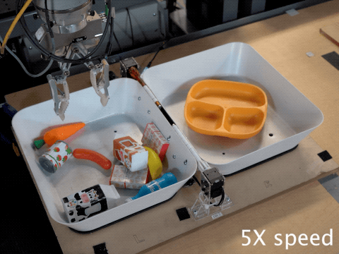
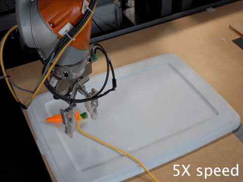

Mt-Opt Closed-Loop Behaviors
Banana Singulation
Below we are evaluating the Mt-Opt system by running the policy with the lift-banana task id.

Carrot Singulation:
Below we are evaluating the Mt-Opt system by running the policy with the lift-carrot task id. Notice that multipled steps are required to singulate and then lift the carrot out of the bin.
1)
 2)
2)
 3)
3)
 4)
4)
 5)
5)
 6)
6)
 7)
7)
 8)
8)
 9)
9)

Work Carrot out of corner: lift-carrot task
Below we are evaluating the Mt-Opt system by running the policy with the lift-carrot task id while the carrot is trapped in the corner.

Uncover Carrot: lift-carrot task
Below we are evaluating the Mt-Opt system by running the policy with the lift-carrot task id while partially covering the carrot with a cloth.


Carrot Chasing: lift-carrot task
Below we are evaluating the Mt-Opt system by running the policy with the lift-carrot task id while pulling the carrot on a string. The policy chases the carrot due to the closed-loop nature of Mt-Opt.

Bowl Chasing: place-any task
Below we are evaluating the Mt-Opt system by running the policy with the place-any task id while moving around the target fixture. The policy chases the bowl due to the closed-loop nature of Mt-Opt.